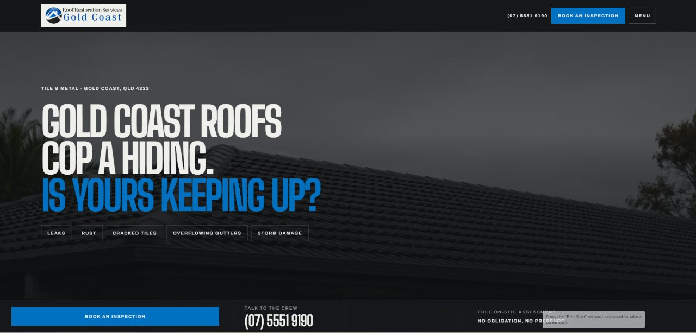

Roofing website design on the Gold Coast: salt, storms and a fast-growing market
Gold Coast roofs deal with salt air, summer storms and the occasional cyclone. Homeowners there want a roofer who knows that, and the website is where they check.

Gold Coast roofing websites need to answer two local questions: do you understand salt and coastal corrosion, and can you help before and after a storm? A coastal roofing page, storm preparation and repair pages, area pages from Coomera to Coolangatta and a visible QBCC licence cover most of it.
The Gold Coast has grown fast, and its roofing market has grown with it. There are new estates in the northern growth corridor, older brick and tile homes in the established suburbs, and beachfront houses and units that take a beating from salt and wind. Roofers here do a wide mix of work, and many of their websites try to cover all of it in one page.
01Why do coastal Gold Coast roofs need their own page?
Salt air is the main problem for roofs near the water. It speeds up corrosion on metal sheets, screws, flashings and gutters, especially where salt sits without being washed off by rain. Homes in Burleigh Heads, Palm Beach, Main Beach and Coolangatta see it most.
Homeowners there want to know that you understand this. A page that explains which roofing materials and fasteners suit a house close to the beach, and how often coastal roofs should be checked, is useful to them and rare on roofing sites. It also gives Google a clear reason to show your site for coastal searches.
02Storm season and cyclones
Like Brisbane, the Gold Coast gets summer storms with hail and damaging wind. It also sits in the path of the occasional tropical system. Ex-Tropical Cyclone Alfred in March 2025 brought days of strong wind and rain to South East Queensland.
When weather like that is coming, people search for roof checks and tie-down work. After it passes, they search for repairs. Your site can serve both:
- A storm preparation page: what you check before a big wind event and how to book it.
- A storm damage page: make-safe work, tarping, insurance photos and realistic timeframes.
- A visible call button and a short form with photo upload on every page.
03Area pages from Coomera to Coolangatta
The Gold Coast is long and narrow. Most homeowners care whether you work their end of it. A few area pages do the job:
- Northern growth corridor: Coomera, Pimpama, Ormeau, Upper Coomera. Newer homes, warranty and extension work.
- Central: Southport, Labrador, Helensvale, Nerang. A mix of older brick and tile and newer builds.
- Beachside: Surfers Paradise, Broadbeach, Burleigh Heads, Palm Beach. Coastal corrosion and older beach houses.
- Southern end: Currumbin, Tugun, Coolangatta. Salt exposure and steep blocks in places.
- Hinterland: Mudgeeraba, Tallebudgera, Tamborine Mountain if you go up there.
Use a real job and photo on each page. Mention the street type or house style if it helps, and leave out suburbs you do not service.

04Where do Gold Coast roofing sites fall short?
- One long homepage that lists every service with no detail on any of them.
- No QBCC licence number, or one hidden in the footer.
- Generic stock photos instead of local jobs, which are easy to take on every visit.
- Slow, image-heavy pages that frustrate people on mobile data at the beach or in their car.
- No mention of salt or coastal work, even by roofers who do a lot of it.
05Common questions
Does coastal roofing really need its own page?
If you do much of it, yes. Homeowners near the beach search for help with corrosion and coastal roofing, and a specific page with your own photos answers them better than a general services list.
What should a storm preparation page include?
What you check, how long it takes, roughly when to book before storm season, and how to contact you. Keep it short and practical. A checklist of what the homeowner should do before the storm arrives also belongs on this page.
How do I show I am licensed in Queensland?
Put your QBCC licence number in the footer of every page and again on your contact and about pages. Some roofers add it beside the phone number in the header, which is the first place many people look.
Should I write about cyclones if they are rare?
A short, practical page is enough. When a system is forecast, people search for roof checks and tie-downs, and a clear page with booking details catches those searches. Keep the details current each season, so they are right when the next system is forecast.
What makes a good roofing project photo?
A wide shot showing the whole roof, a close shot of the detail you fixed, and a caption with the suburb and job type. Before and after pairs work best.
If your Gold Coast roofing site does not reflect the coastal and storm work you do, start a brief and I will reply with what I would change first. Roofers in Brisbane face the same storms with very different houses.